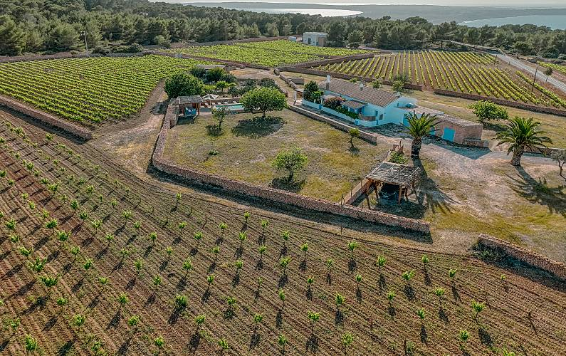
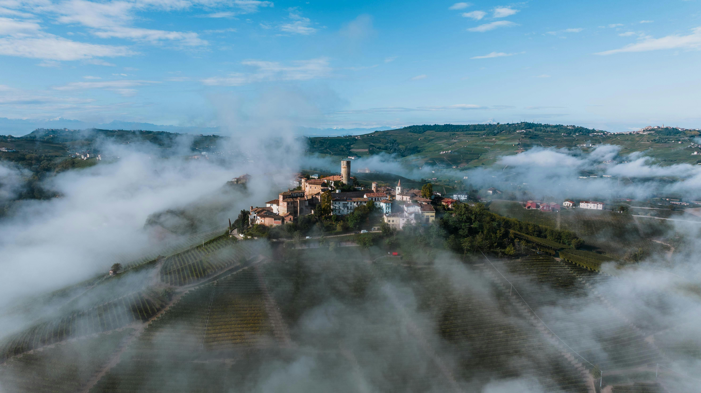

Veneto · Valdobbiadene
Cartizze
DOCG Cartizze · Glera · 107 ha
17181920
2122232425

Balearic Islands · Formentera
Formentera
2 wineries · Monastrell · Fogoneu · ~14 ha
17181920
2122232425

Piedmont · Langhe
BaroloBeta
DOCG Barolo · Nebbiolo · 177 MGA
17181920
2122232425